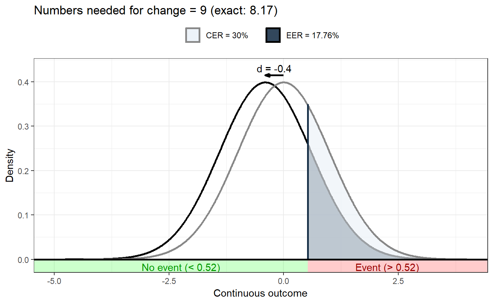

nnc.RdThis function computes the Numbers Needed for Change, and shows a visualisation to illustrate them. Numbers Needed for Change is the name for a Numbers Needed to Treat estimate that was computed for a continuous outcome as is common in behavior change research.
nnc(d = NULL, cer = NULL, r = 1, n = NULL, threshold = NULL, mean = 0, sd = 1, poweredFor = NULL, thresholdSensitivity = NULL, eventDesirable = TRUE, eventIfHigher = TRUE, conf.level = 0.95, dReliability = 1, d.ci = NULL, cer.ci = NULL, r.ci = NULL, d.n = NULL, cer.n = NULL, r.n = NULL, plot = TRUE, returnPlot = TRUE, silent = FALSE) # S3 method for nnc print(x, digits = 2, ...)
| d | The value of Cohen's d. |
|---|---|
| cer | The Control Event Rate. |
| r | The correlation between the determinant and behavior (for mediated Numbers Needed for Change). |
| n | The sample size. |
| threshold | If the event rate is not available, a threshold value can
be specified instead, which is then used in conjunction with the mean
( |
| mean | The mean value, used to draw the plot, or, if no CER is provided but instead the threshold value, to compute the CER. |
| sd | The standard deviation, used to draw the plot (and to compute the CER if a threshold value is supplied instead of the CER). |
| poweredFor | The Cohen's d value for which the study was powered. This expected Cohen's d value can be used to compute the threshold, which then in turn is used to compute the CER. To use this approach, also specify the mean and the standard deviation. |
| thresholdSensitivity | This argument can be used to provide a vector of potential threshold values, each of which is used to compute an NNC. This enables easy inspection of whether the value chosen as threshold matters much for the NNC. |
| eventDesirable | Whether an event is desirable or undesirable. |
| eventIfHigher | Whether scores above or below the threshold are considered 'an event'. |
| conf.level | The confidence level of the confidence interval. |
| dReliability | If Cohen's d was not measured with perfect reliability,
|
| d.ci | Instead of providing a point estimate for Cohen's d, a confidence interval can be provided. |
| cer.ci | Instead of providing a point estimate for the Control Event Rate, a confidence interval can be provided. |
| r.ci | Instead of providing a point estimate for the correlation, a confidence interval can be provided. |
| d.n | In addition to providing a point estimate for Cohen's d, a sample size can be provided; if it is, the confidence interval is computed. |
| cer.n | In addition to providing a point estimate for the Control Event Rate, a sample size can be provided; if it is, the confidence interval is computed. |
| r.n | In addition to providing a point estimate for the correlation, a sample size can be provided; if it is, the confidence interval is computed. |
| plot | Whether to generate and show the plot. |
| returnPlot | Whether to return the plot (as an attribute), or to only display it. |
| silent | Whether to suppress notifications. |
| x | The |
| digits | The number of digits to round to. |
| ... | Any additional arguments are passed to the |
The Numbers Needed for Change (NNC), potentially with a plot visualising the NNC in an attribute.
Numbers Needed to Treat is a common and very useful effect size
measure in use in the medical sciences. It is computed based on the
Control Event Rate (CER) and the Experimental Event Rate (EER), and
expresses how many people would need to received a treatment to yield
a beneficial result for one person. In behavior change research, a
similar measure would be useful, but the outcome is normally not
dichotomous as is common in the medical literature (i.e. whether a
participants survives or is cured), but continuous. Numbers Needed
for Change fills this lacuna: it is simply the Numbers Needed to Treat,
but converted from a Cohen's d value. nnt is an alias for nnc.
For more details, see Gruijters & Peters (2019) for details.
Gruijters, S. L., & Peters, G. Y. (2019). Gauging the impact of behavior change interventions: A tutorial on the Numbers Needed to Treat. PsyArXiv. doi:10.31234/osf.io/2bau7
#> #> Numbers needed for change: 7 (exact: 6.64) #> #> (Based on a Control Event Rate (CER) of .3, an Experimental Event Rate (EER) of .45 and a Cohen's d of 0.4.)### Or for a scenario where events are undesirable, and the ### intervention effective (therefore having a negative value for d): behaviorchange::nnc(d=-.4, cer=.3, eventDesirable=FALSE);#> #> Numbers needed for change: 9 (exact: 8.17) #> #> (Based on a Control Event Rate (CER) of .3, an Experimental Event Rate (EER) of .18 and a Cohen's d of -0.4.)